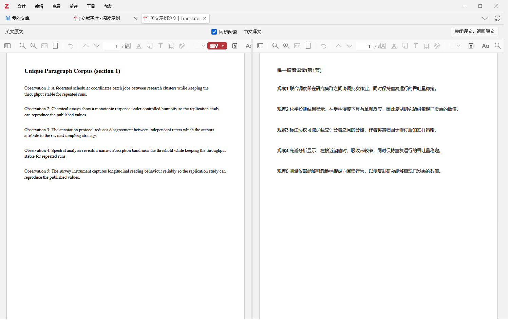
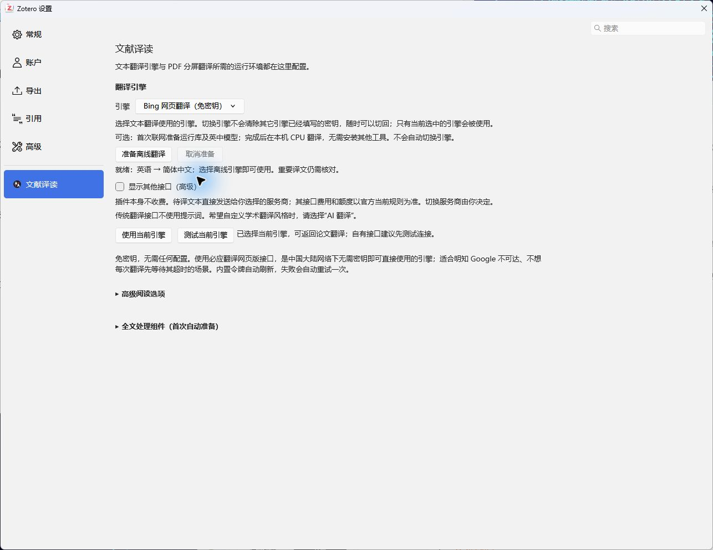
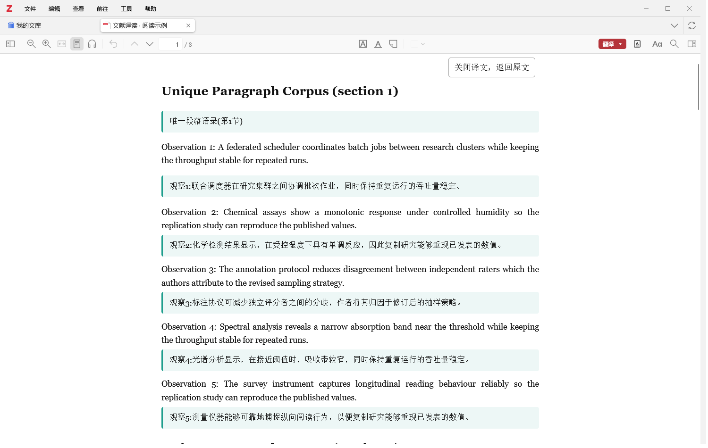
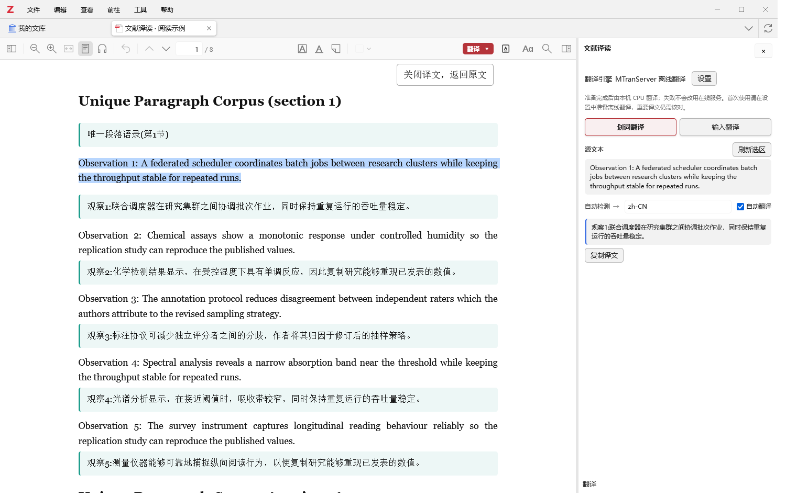
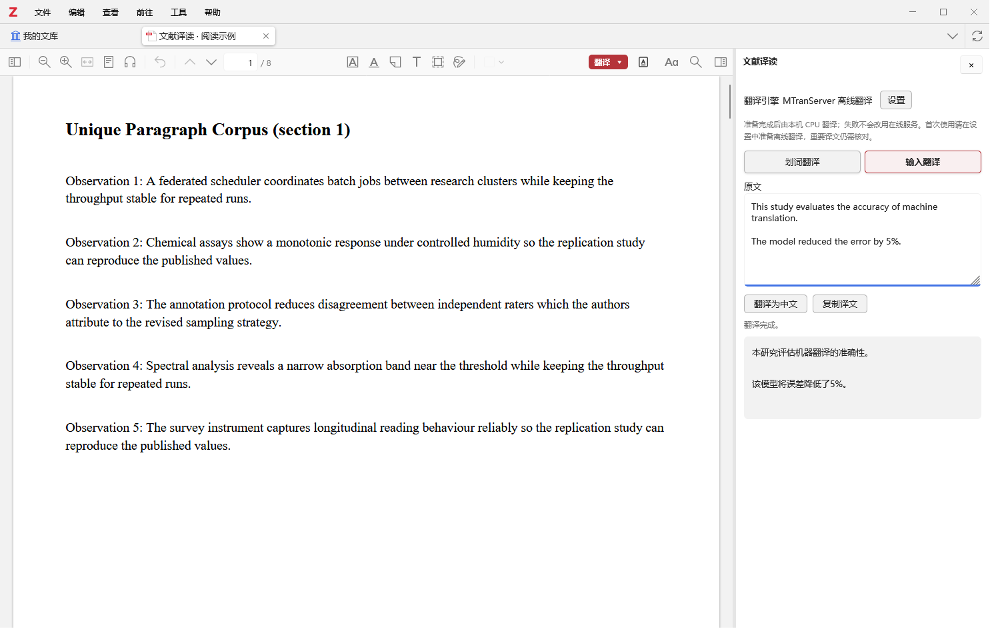
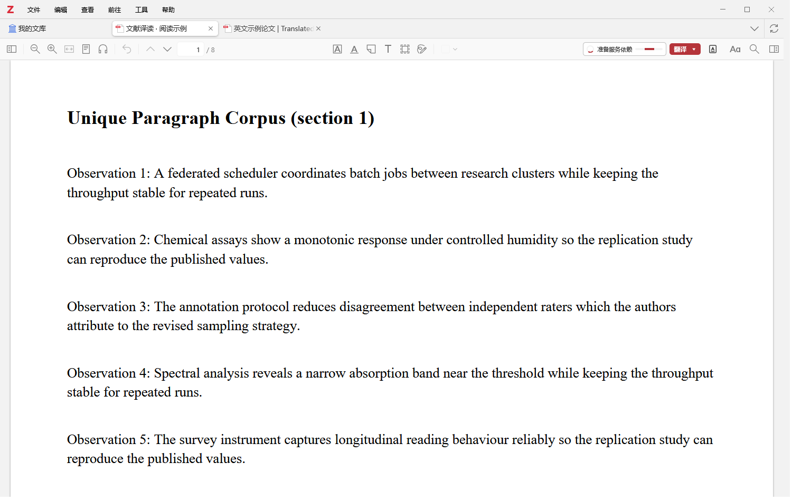

在论文里，
读懂下一段。
选中一句话，或翻开整篇译文。
让中英对照留在 Zotero，让注意力留在研究本身。
Windows x64 · Zotero 10 · 免费开源
基础包约 5.2 MB，离线模型按需准备。

第一次使用，只需三步
先用免费在线引擎读起来，离线准备可以以后再做。
- 下载 XPI，安装后重启
从 GitHub Releases 的 Assets 下载 .xpi。在 Zotero 选择“工具 → 插件 → 齿轮 → 从文件安装插件”。Source code 是源码，不是安装包。
- 第一次点击“翻译”，确认引擎
插件会打开设置。可先选择免密钥的必应网页翻译，点击“使用当前引擎”；自己的 API 可先测试连接。
- 返回论文，选择阅读方式
点开“翻译 ▾”，选择分屏、对照、划词或输入。首次全文处理可能按提示准备 Java 与解析组件。


通读、细读，或只理解一句
点击下面的功能，切换真实界面截图。这个演示不会上传文本或调用翻译服务。
左右并排，通读整篇论文
“翻译 ▾ → 分屏翻译”。原文在左，译文在右；可拖动边界调宽，勾选同步阅读联动滚动。
生成完整 PDF 后打开分屏。读完点顶部“关闭译文，返回原文”，译文附件仍保留，下次可复用。

一段英文，一段中文
“翻译 ▾ → 对照翻译”。重排视图在英文段落下逐步显示中文，先读已完成的部分。
分页和多栏布局会变化。核对公式、图片或原页码时，点“关闭译文，返回原文”。这里同样支持划词。


选中词句，马上看译文
先打开“划词翻译”，再选择单词、句子或段落。原 PDF、分屏和对照页面都支持。
面板可调宽、可关闭。自动翻译开关由你控制；切换选区会取消旧请求，“复制译文”只复制结果。


自己输入，也不用离开 Zotero
“翻译 ▾ → 输入翻译”，或文献库的“工具 → 文献译读：输入翻译”。不需要先选中条目。
粘贴文字，点“翻译为中文”，完成后“复制译文”。和划词共用侧栏，不另开输入标签页。


原 PDF 和原有批注保留。生成的译文 PDF 另存为附件；失败段落自动补译一轮，仍失败可手动重试。
需要断网读？
再准备离线引擎。
这是可选项。免费在线先用，离线按需下载。
- 设置中点击“准备离线翻译”，自动准备运行库、依赖和英中模型，无需安装 Node、Python 或 Docker。
- “翻译”左侧与设置同步显示进度，可查看详情、取消或重试。校验、初始化和试译通过才显示“就绪”。
- 准备好后，选择 MTranServer 本机离线引擎。CPU 运行，失败不会偷偷改用在线服务。
仅 Windows x64、英语到简体中文。全文组件也要提前准备。离线译文不保证更准确，重要内容仍需核对。


是不是一定要付费或填写 API 密钥？
插件免费，必应网页翻译可免密钥体验。免费接口可能限流或变更；自己的 API 按服务商规则收费。插件不会自动切换服务商。
之前翻译过的内容，可以复用吗？
可以。开启缓存后，相同引擎配置、语言与规范化文本的句段会复用。分屏和对照的断句方式可能不同，因此不能保证整篇命中，也不能直接互换成品。
失败了或想取消，怎么处理？
从翻译菜单取消，主按钮恢复“翻译”。全文会保存成功段落与检查点；自动补译一轮后仍失败，可点击“重试失败段落（N）”。不要把未译内容当作已完成。
扫描件和公式都支持吗？
当前需要有文字层的 PDF，不含 OCR。复杂版式和公式仍有限制；对照可保留原有数学格式，但不能修复源文本已损坏的公式。请回原 PDF 核对。
我的论文会发送到哪里？
在线待译文本发送到你选定的翻译服务。MTranServer 准备好后在本机运行。密钥使用宿主安全存储，反馈问题时不要公开密钥或私人论文。
需要上传到自己的网站？下载页面压缩包，解压后直接打开 index.html，或把整个目录上传至静态网站。